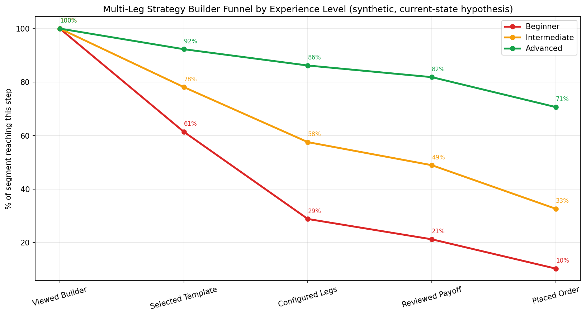
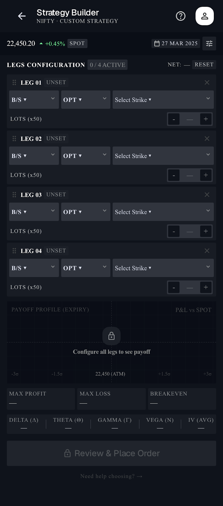
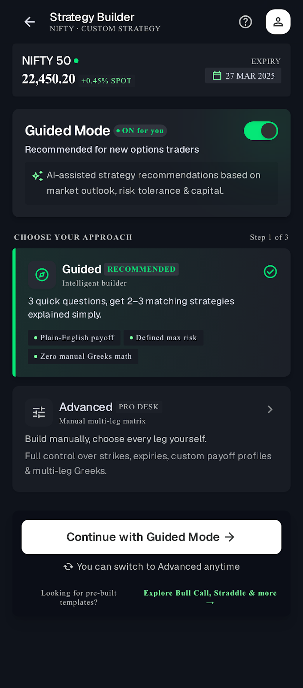
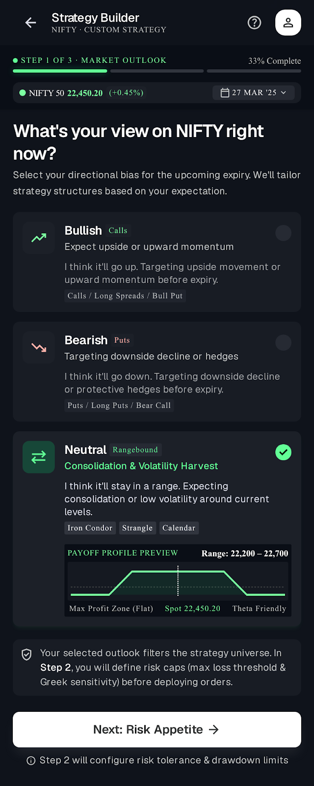
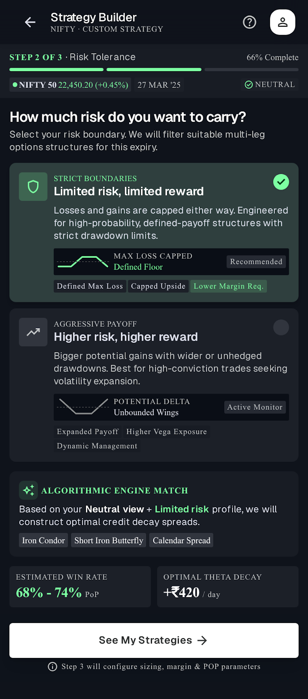
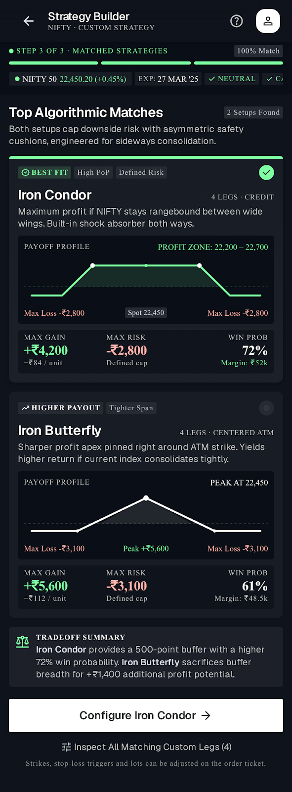
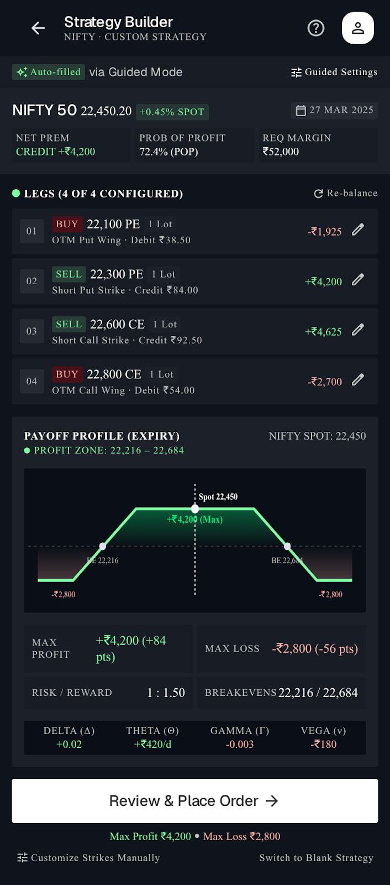
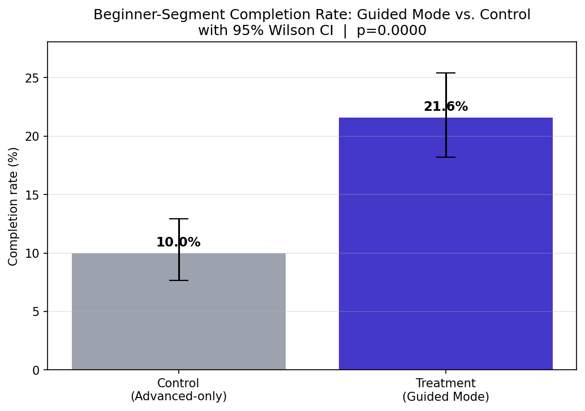
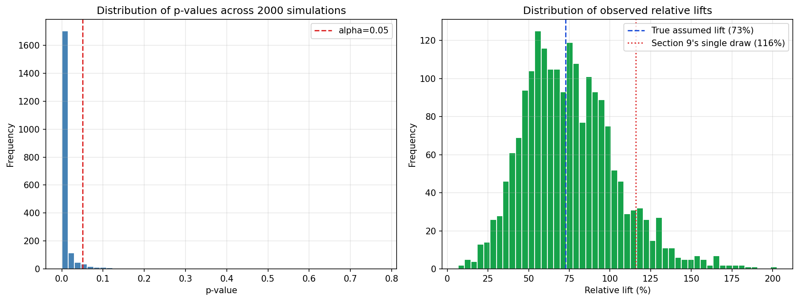
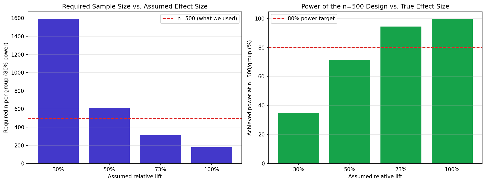

A data-driven redesign of Nubra's multi-leg Strategy Builder — competitor benchmarking, a PRD, wireframes, and a funnel + A/B analysis to justify the call.
Nubra's Strategy Builder is a genuine differentiator — 40+ pre-built strategies, native payoff diagrams, four trading modes. Zerodha Kite has no native equivalent at all; it requires a separate paid Sensibull subscription to get the same payoff graphs.
App Store reviews back this up — the builder itself gets praised ("every option seller must try it"). But nothing in the current flow helps a trader who has never built a multi-leg strategy before. There's no guided or logic-based path for someone who doesn't yet know how to pick each leg's strike manually.
Dhan's "Quant Mode" shows this gap is fillable — logic-based leg selection already exists elsewhere in the market. The question this case study answers: how much of Nubra's own beginner drop-off is this gap actually costing, and is a guided mode worth building?
Sourced from real app listings and public comparison articles — not assumed.
| Platform | Native strategy builder? | Payoff diagram | Beginner / guided mode | Notes |
|---|---|---|---|---|
| Nubra | Yes, native | Yes | Not evident | 40+ pre-built strategies, 4 trading modes (Buyer / Seller / OI Trader / Investor) |
| Zerodha Kite | No — basket orders only | No — requires paid Sensibull (~₹800/mo) | No | Manual leg-by-leg order entry without Sensibull |
| Dhan (Options Trader) | Yes, native | Yes + POP, live Greeks | Yes — "Quant Mode" | Logic-based leg selection (e.g. by Delta, ATM points) — most advanced on-ramp for less experienced sellers |
| Groww (915 terminal) | Yes, native | Yes | Not evident | Dedicated F&O terminal, separate from the main app |
Takeaway: Nubra is already ahead of Zerodha on the core feature. The gap isn't capability — it's onramp. Dhan's Quant Mode proves a guided, logic-based path is buildable and already exists in the market; Nubra just doesn't have one yet.
She downloaded Nubra for zero-brokerage equity delivery, has placed a handful of single-leg option trades, and has never built a multi-leg strategy. She opens the Strategy Builder after seeing "Iron Condor" mentioned in a trading Telegram group — then leaves without placing an order.

Synthetic funnel, calibrated to sit within published fintech onboarding benchmarks (Section 8 of the notebook) — not real Nubra data. The point is the method, not the exact numbers.
Biggest single-step drop for Beginners: "Selected Template" (61%) → "Configured Legs" (29%) — exactly the step Guided Mode targets. It removes manual leg configuration entirely for the recommended-strategy path.
Goal: increase first-time Beginner-segment completion of a multi-leg build, without adding friction for Intermediate/Advanced users who don't need it.
A "Guided Mode" toggle on the Strategy Builder landing screen — on by default for Beginner-segment users, off by default (but available) for everyone else.
Market view → risk appetite → 2-3 recommended strategies, each with a one-line plain-language explanation ("Iron Condor: profits if the stock stays in a range, limited risk both ways").
Picking a recommended strategy pre-fills the existing Advanced Builder with every leg already set. The Advanced Builder itself is untouched for anyone who skips Guided Mode.
Each screen maps to a specific step in the PRD and a specific point in the funnel above.
A first-time user lands on the same leg-by-leg configuration screen as an experienced seller — pick a strike, pick a type, pick a quantity, for every leg, with no help deciding what any of it should be.
This is where Beginners fall from 61% to 29% in the funnel above. Nothing in this screen is broken — it's simply built for a trader who already knows what they're doing.

A toggle sits at the top of the existing landing screen — on by default for Beginner-segment users, discoverable and switchable for everyone else. Nothing about the Advanced path changes for traders who don't need this.

Bullish, bearish, or neutral — one tap, plain language, no jargon about deltas or IV up front. This is the first of the two inputs that narrow 40+ strategies down to 2-3 relevant ones.

Limited risk, limited reward vs. higher risk, higher reward — framed as a trade-off, not a technical parameter. Combined with market view, this pair of answers is enough to shortlist strategies.

Each recommendation is a card with a name, a one-line plain-language explanation, and a mini payoff shape — not a list of strategy names Aisha has to look up herself.
This is the payoff of the whole wizard: the moment "Iron Condor" (the term that got her curious in the first place) becomes something she understands well enough to act on.

Tapping a recommended strategy lands Aisha back on the exact Advanced Builder from Screen 1 — except every leg is already set, and the payoff diagram is already visible.
This is the design decision that makes Guided Mode low-risk to ship: there's no second builder to maintain. Guided Mode is only ever a faster way into the one that already exists.

A synthetic A/B simulation, sized and interpreted the way a real experiment would be — including the ways a single result can mislead.

Single simulated draw: 10.0% (control) vs. 21.6% (treatment), n=500/arm, chi-square p<0.0001. 95% CIs don't overlap.
Being honest about that +116% headline: that's the lift from one specific random draw. Repeating the exact same simulation 2,000 times (holding the true assumed rates fixed at 11% → 19%) shows the median observed lift is actually +73%, much closer to the true +72.7% the assumption implies. A single A/B run can overstate — or understate — the real effect by a wide margin.

2,000 repeated simulations of the same test. 93.8% land below p=0.05 — but the observed lift varies widely around the true +72.7%.

n=500/group is well-powered (94.4%) at the optimistic +72.7% lift — but only 34.8% powered at a more conservative +30% lift, which is the honest argument for sizing the real experiment larger.
| Metric | Value |
|---|---|
| Beginner completion rate (current, Advanced-only builder) | 10.2% |
| Biggest single-step drop for Beginners | Selected Template (61%) → Configured Legs (29%) |
| A/B test: Control / Treatment completion (single draw, n=500/arm) | 10.0% / 21.6%, p<0.0001 |
| True assumed rates (control → treatment) | 11% → 19% (true lift: +72.7%) |
| Required n/group for the true +72.7% lift at 80% power | 312 (n=500 was adequate) |
| Power at n=500 if the true lift is only +30% | 34.8% (badly underpowered) |
Recommendation: ship Guided Mode as opt-in (default-on for new/Beginner-segment users) — but size the real experiment for a conservative +30-50% lift, not the optimistic +116% a single simulated draw happened to show. That means ~700-1,800 Beginner-segment users per arm, sticky-bucketed at first Strategy Builder open, measured on completion rate (viewed → placed order) at α=0.05.
This case study is scoped to secondary research, methodology, and concept design. Here's how I'd extend it.
A note on the data: the funnel and A/B numbers in this case study are synthetic, generated from probabilities calibrated to sit within published fintech onboarding and activation benchmarks (linked in the notebook) — not real Nubra data, which isn't publicly available. The point of this project is the methodology: how to define, size, and honestly interpret an experiment like this — not the specific numbers.